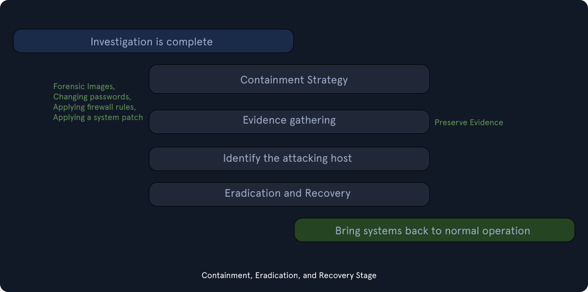

Short-term: Isolare VLAN, staccare cavi, bloccare C2. Minimizzare alterazioni per forensica.
Long-term: Patching, reset password globali.
Eliminare la causa radice e i residui (malware). Reimaging dei sistemi, ripristino da backup sicuri, miglioramento hardening.
Ripristino operazioni normali. Monitoraggio intensivo dei sistemi ripristinati per assicurarsi che l'attaccante non ritorni.
Lezione apprese (Lessons Learned) e reportistica finale per migliorare le capacità future.
